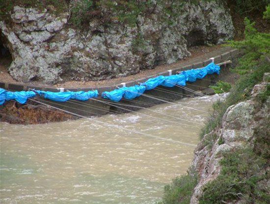
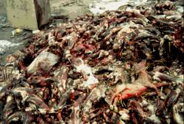

Evidences
- Dolphin Slaughter

The killing of the dolphins is often witnessed (and sometimes assisted) by representatives of Japanese dolphinariums, including trainers and veterinarians. The dolphinariums attend the hunts to buy showable dolphins for their own use or for sale to dolphinariums and amusement parks in other parts of Asia and Europe. The hunters make significant sums of money from these sales; a single dolphin can fetch more than $150,000. Most of the animals, however, are killed, and their meat and internal organs wind up for sale in restaurants and food stores in Taiji and major cities such as Osaka and Tokyo. Dolphin meat also contains toxic levels of methyl mercury and PCBs.
- Fox and Mink

Farmed foxes are raised in small outdoor cages, exposed to the harsh elements of winter and summer. Many foxes develop psychotic behavior, literally bouncing off the walls of their cages as they are pacing furiously back and forth. Many develop problems from standing on wire for months on end. In the end, they are anally electrocuted in order to preserve the fur. Mink, which in the wild are very active animals, are raised in tiny cages, each about the length of the animal's own body. The typical mink farm is comprised of units, each with dozens of rows of individual cages with open sides that expose the animals to harsh weather. Conditions are deplorable and filthy. Farmed mink is killed by gassing, violent neck breaking or poisoning, all slow grueling deaths. Approximately 10% of animals die every year due to stress and illness.